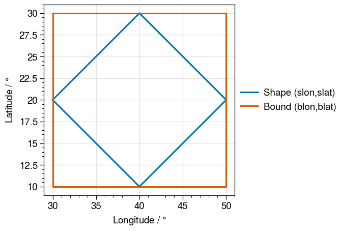

Reading in Defined GeoRegion Information
In this section, we go through process of extracting information regarding a GeoRegion.
Extracting GeoRegion Information
We use the function GeoRegion(ID), where ID is the ID of the GeoRegion, in order to extract the information for the GeoRegion.
julia> using GeoRegionsjulia> GeoRegion("AR6_NWN")[ Info: 2021-08-06T11:12:37.387 - GeoRegions.jl - Retrieving information for the GeoRegion defined by the ID AR6_NWN [ Info: 2021-08-06T11:12:37.388 - GeoRegions.jl - Checking to see if the ID AR6_NWN is in use [ Info: 2021-08-06T11:12:37.389 - GeoRegions.jl - The ID AR6_NWN is already in use The Polygonal Region AR6_NWN has the following properties: Region ID (regID) : AR6_NWN Parent ID (parID) : GLB Name (name) : Northwest North America Bounds (N,S,E,W) : [81.0, 50.0, -105.0, -168.0] Shape (shape) : Point2{Float64}[[-105.0, 50.0], [-130.0, 50.0], [-143.0, 58.0], [-168.0, 52.5], [-168.0, 72.6], [-129.0, 72.6], [-125.0, 77.6], [-105.0, 81.0], [-105.0, 50.0]] (is180,is360) : (true, false)
GeoRegions.GeoRegion — MethodGeoRegion(RegID::AbstractString) -> geo::GeoRegionExtracts information of the GeoRegion with the ID RegID. If no GeoRegion with this ID exists, an error is thrown.
Arguments
RegID: The keyword ID that will be used to identify the GeoRegion. If the ID is not valid (i.e. not being used), then an error will be thrown.
Returns
geo: A GeoRegion
The Difference between Bounds and Shape in a PolyRegion
What is the difference between the fields bound and shape in a PolyRegion? The answer is simple: a bound is a rectilinear-region in the lon-lat coordinate system, while the shape denotes the actual PolyRegion. We retrieve the longitude and latitude coordinates for the bound and shape fields using the function coordGeoRegion().
There is no field shape in a RectRegion because the shape of a RectRegion is defined by its rectilinear bound.
julia> using GeoRegionsjulia> blon,blat,slon,slat = coordGeoRegion(GeoRegion("AR6_NWN"))[ Info: 2021-08-06T11:12:37.472 - GeoRegions.jl - Retrieving information for the GeoRegion defined by the ID AR6_NWN [ Info: 2021-08-06T11:12:37.474 - GeoRegions.jl - Checking to see if the ID AR6_NWN is in use [ Info: 2021-08-06T11:12:37.474 - GeoRegions.jl - The ID AR6_NWN is already in use ([-168.0, -105.0, -105.0, -168.0, -168.0], [81.0, 81.0, 50.0, 50.0, 81.0], [-105.0, -130.0, -143.0, -168.0, -168.0, -129.0, -125.0, -105.0, -105.0], [50.0, 50.0, 58.0, 52.5, 72.6, 72.6, 77.6, 81.0, 50.0])
From plotting the bounds (blon,blat) and the shape(slon,slat), we see that the bound is the region defined by the westernmost, easternmost, northernmost and southernmost coordinates of the shape.

GeoRegions.coordGeoRegion — MethodcoordGeoRegion(geo::RectRegion) -> blon::Vector{<:Real}, blat::Vector{<:Real}For a given RectRegion, extract the [N,S,E,W] bounds and create a longitude and latitude vector.
Arguments
geo: A RectRegion (i.e. a rectilinear GeoRegion)
Returns
blon: A vector of longitude points for the bound of the GeoRegionblat: A vector of latitude points for the bound of the GeoRegion
GeoRegions.coordGeoRegion — MethodcoordGeoRegion(geo::PolyRegion) ->
blon::Vector{<:Real}, blat::Vector{<:Real},
slon::Vector{<:Real}, slat::Vector{<:Real},For a given RectRegion, extract the [N,S,E,W] bounds and create a longitude and latitude vectors for the bound and the shape of the GeoRegion
Arguments
geo: A PolyRegion (i.e. a polygonal GeoRegion)
Returns
blon: A vector of longitude points for the bound of the GeoRegionblat: A vector of latitude points for the bound of the GeoRegionslon: A vector of longitude points for the shape of the GeoRegionslat: A vector of latitude points for the shape of the GeoRegion